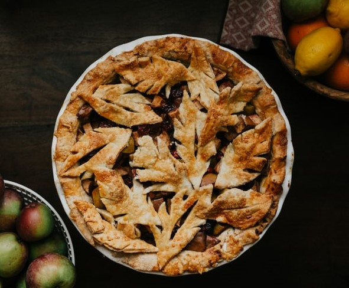

Cutural facts
Similarly, to the United States, there is a lot of diversity both ethnically and historically in Canada. This makes it so that there is a melting-pot of different cultures. However, the main influence in Canada is French culture, primarily in Quebec and New Brunswick.
Languages
- French
- English
Food
Breakfast
- cooked eggs
- fried pork sausages or bacon
- fried or deep-fried potatoes
- pancakes (or egg-battered French Toast)
Lunch
- Poutine
- Butter tarts
- Saskatoon berry pie 
Dinner
- Nova Scotian Lobster Rolls
- Montreal-style Bagels
Current Events
- Politics
- A serious, controversial issue in Canada is their legislation of abortion. Even today there contiunes to be a large amount of disagreement on the topic. With about 40% of the population of identifing as Catholic, there is a large portion of the population against abortion. Additionally, late-term abortions are legal.
- Covid-19
- "In the ensuing weeks, rules were relaxed across much of the province. The Quebec City area and the Outaouais were among the regions reclassified as orange zones. Restaurant dining rooms and gyms were reopened."
Tourist Hotspots
- Ottawa (Capital)
- Parliament Hill
-
Rideau Canal

Average Travel Pricing
- 7 day trip to Ottawa
- $1,168 for a solo traveler
- $2,098 for a couple
- $3,933 for a family of 4
- Ottawa hotels range
- $56 to $257 per night